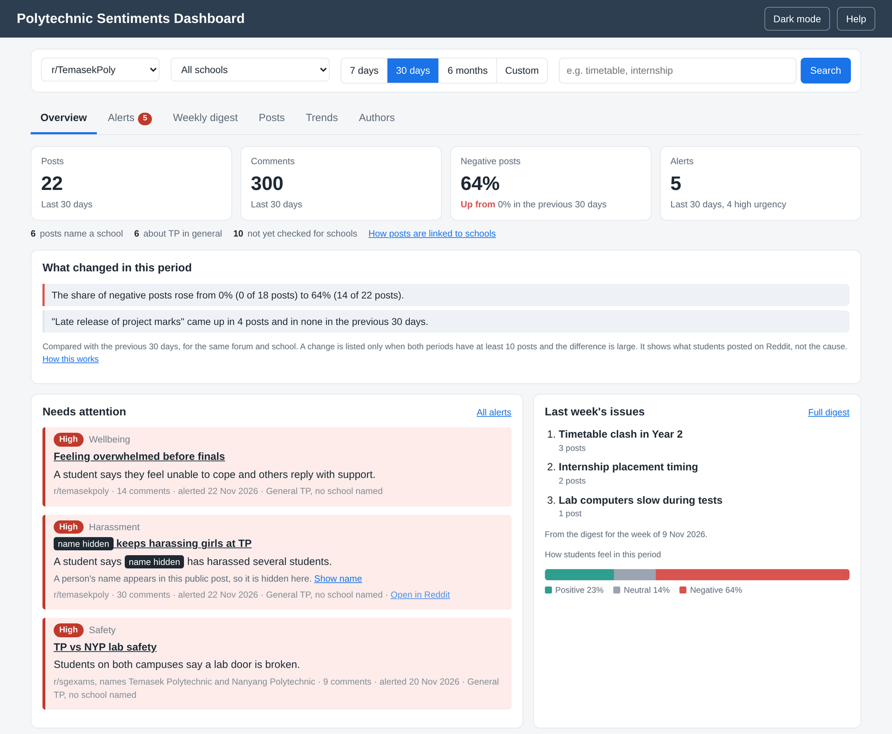
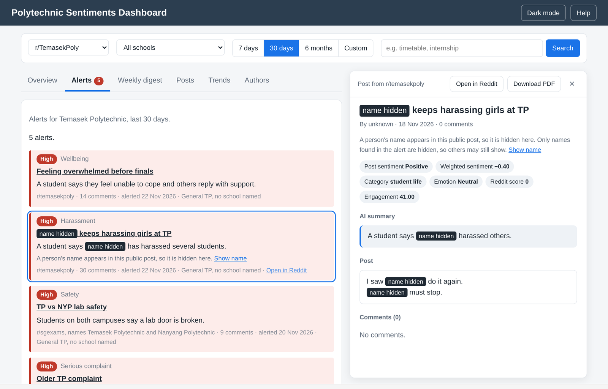

Help
How to use the dashboard, what each part shows and what it cannot tell you.
What the dashboard is
The dashboard collects posts and comments once a day from selected Reddit forums relating to Singapore’s polytechnics. AI rates the sentiment of each post and comment, and the dashboard shows the results. It helps staff find posts and issues that may need attention.
Toolbar
The toolbar at the top sets what the whole page shows. The page updates as soon as you change a setting.
| Setting | What it does |
|---|---|
| Forum | The Reddit forum to look at. The page opens on r/TemasekPoly. |
| School | TP only. “All schools” shows every post. Choosing a school shows only the posts linked to that school. See School filter. |
| Period | 7 days, 30 days, 6 months, or Custom to set your own dates. The page opens on the last 30 days. |
| Search posts | Finds posts and comments that contain a word. |
“Dark mode” and “Help” are at the top right of the page. The dashboard also works on a phone.
Tabs
| Tab | What it shows |
|---|---|
| Overview | The main figures, what changed, alerts that need attention, last week’s issues, how students feel, the issues raised and the most discussed posts. |
| Alerts | Posts that AI suggests staff read. The number on the tab counts them. |
| Weekly digest | A summary of each week, with up to three issues. |
| Posts | The 10 most discussed, most negative, most positive or newest posts. |
| Trends | Charts by post and topics over time. |
| Authors | The 10 authors with the most negative posts and comments. |
Overview
The Overview is the first page. It covers the forum, school and period chosen in the toolbar.

Figures at the top
The number of posts and comments, the share of negative posts with its change from the previous period, and the number of alerts.
On the Overview, a post counts as negative when the discussion under it is negative overall. This is worked out from the sentiment of its comments, and comments with more upvotes count more. A post with no comments does not count as negative.
What changed in this period
The dashboard compares the chosen period with the previous period of the same length, for the same forum and school. A change is listed only when both periods have at least 10 posts and the change meets one of these thresholds:
- The share of negative posts rose or fell by 15 percentage points or more.
- The number of posts or comments rose by half or more, or fell by a third or more. For comments, both periods must have at least 50.
- An issue came up in three or more posts, and either did not appear in the previous period or appeared at least three times as often.
Each line gives the figures for both periods. With fewer posts, the card says there are too few to compare. With a school chosen, the comparison is made only when most posts in the earlier period have been checked for schools.
Needs attention and Last week’s issues
“Needs attention” shows the first three alerts. “Last week’s issues” shows the issues from the latest weekly digest. Each has a link to the full list.
How students feel in this period
A bar that shows the share of positive, neutral and negative posts. It uses the same measure as the share of negative posts above.
Issues raised in this period
AI groups posts about the same specific problem, such as a timetable clash or slow lab computers, under one issue. The card lists the issues raised in two or more posts, with the number of posts, comments and negative posts. “Also raised in the previous N days” means at least one post in the previous period of the same length raised the same issue. Click an issue to see its posts.
Posts that raise no specific problem, such as questions about courses, are not grouped. Issue names never include a person’s name.
School filter
The School filter covers the six TP academic schools: Applied Science, Business, Design, Engineering, Humanities & Social Sciences, and Informatics & IT. The selected school also applies to alerts and the weekly digest.
How a post is linked to a school
AI attempts to identify the school from references in the post to the school’s name or short form, one of its diplomas, one of its modules, or a named facility or programme. The words that led to the link are shown with the post, so you can check it.
General words do not count. Examples are “TP”, bursaries, fees, CCAs, campus services and school subjects. On forums other than r/TemasekPoly, the post must also mention Temasek Polytechnic.
Posts that name no school
Most posts do not name a school. These are counted as general TP posts. They appear under “All schools” but not under a single school. The line under the figures on the Overview shows how many posts name the school, how many are general TP and how many have not been checked yet.
- The number of posts identified for each school is small. School figures show the posts that refer to the school. They are not representative of all students in that school.
- Posts older than about 90 days have not been checked for schools.
- The list of module names is complete for Informatics & IT only. A post that names only a module of another school may not be linked.
Alerts
After the daily collection, AI checks new posts and identifies those that may need staff attention. Each alert shows the kind of concern, its urgency, a short reason, the forum, the number of comments and the date. Alerts follow the period chosen in the toolbar.
| Kind | What it covers |
|---|---|
| Wellbeing | A student who seems to be in distress, or talks about self-harm. |
| Safety | A threat, violence, an injury or an unsafe place on campus. |
| Harassment | Bullying, harassment, discrimination or misconduct. |
| Academic integrity | Cheating, leaked papers or plagiarism. |
| Serious complaint | A specific complaint about a module, lecturer, service or decision that many students agree with, or that could affect students’ results or safety. |
| Other | Anything else that clearly needs a staff response soon. |
Only wellbeing, safety, harassment and serious complaint can be marked High. Ordinary complaints about workload, exams, timetables, grades or food get no alert. A post with no clear subject gets no alert.
Click the title of an alert to read the post with its comments and AI summary. “Open in Reddit” goes to the post on Reddit.
Personal names
Names identified by AI are hidden by default and replaced by a “name hidden” label, both in the alert and in the post opened from it. Any reader can choose “Show name”.
- An alert highlights a post for review. It does not confirm that a problem exists.
- AI can miss a post that matters, raise an alert that is not needed, or miss a name.
- Hiding names is a display feature only. It does not control access and does not guarantee anonymity. The original post remains public on Reddit.
- Alerts are shown on the dashboard only. They are not sent by email. They are available for posts from late September 2026 onwards.
Weekly digest
The Weekly digest tab gives a summary of each week, from Monday to Sunday. A new digest is made every Monday morning, and you can choose an earlier week from the list. For TP there is one digest for the whole polytechnic and one for each school.
Each digest shows:
- The number of posts and comments.
- The share of negative posts, compared with the average of up to four earlier weeks. Here a post counts as negative when AI rates the post itself as negative.
- A short overview of the week.
- Up to three issues. Each one states what students say, a possible follow-up for staff, and the posts it is based on.
- The most negative threads.
Click a post in the digest to read it with its comments and AI summary.
Reading a post
Click an alert, a post in the digest or a post in a list. The post opens in a panel on the right of the same page, below the toolbar. The main page stays in place and can still be used. Click another post to change the panel, or close it with the X button or the Esc key. On a phone the panel takes the full screen and has a Back button.

The panel shows the AI summary, the post, and the comments with the sentiment of each. A bar shows how many comments are positive, neutral and negative. Search results, the posts of one day and the posts of one author open in the same panel.
| Label | Meaning |
|---|---|
| Post sentiment | How AI rates the post itself: positive, neutral or negative. |
| Weighted sentiment | The sentiment of the comments, from -1 to 1. Comments with more upvotes count more. |
| Category and emotion | The topic and the main emotion that AI assigns to the post. |
| Reddit score | Upvotes minus downvotes on Reddit. |
| Engagement | A score that rises with the post’s Reddit score and its number of comments. |
“Open in Reddit” goes to the post on Reddit. “Download PDF” saves the view as a PDF report.
Posts, Trends and Authors
Posts
Choose “Most discussed”, “Most negative”, “Most positive” or “Newest” to list 10 posts. Click a row to read the post.
Trends
Charts by post show sentiment, weighted sentiment, comments and engagement. They show the top 15 posts unless you tick “Show all posts”. Another chart shows topics over time.
Authors
The 10 authors with the most negative posts and comments. Click an author to see their posts and comments. Authors are shown by their Reddit usernames.
Other polytechnics
The forum list includes the forums of Nanyang, Republic, Singapore and Ngee Ann Polytechnics, and r/SGExams. Alerts and the weekly digest cover each polytechnic, so the Overview has the same parts for each forum.
A post on r/SGExams counts for a polytechnic only when it names that polytechnic by its full name or short form (TP, NYP, RP, SP or NP). The School filter and the digests by school apply to TP only.
How the data is collected
- Posts and comments are collected every day at 5 am, Singapore time.
- AI (Google Gemini) rates the sentiment of each post and comment, and assigns a category and an emotion to each post.
- A post is read again each day for seven days, so comments added later are counted.
- Dates follow Singapore time.
Technical details are in the crawler documentation on GitHub.
Points to note
- The dashboard reflects what was posted on the selected public Reddit forums. It does not represent the views of all students.
- Sentiment ratings, school links, alerts, issue groups and digests are produced by AI and can be wrong. They have not been independently verified. Read the post before acting on it.
- The dashboard has no sign-in. Anyone who has the link can open it and can choose to show a hidden name.